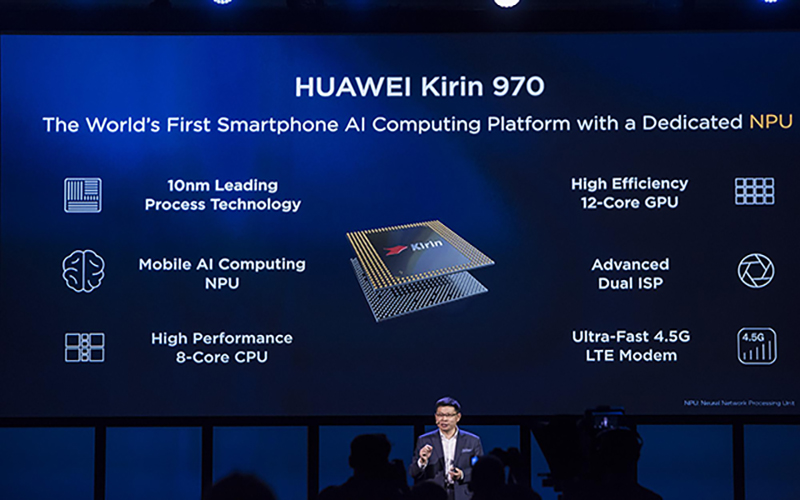
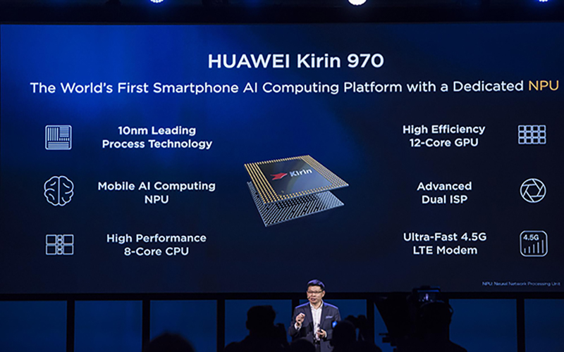
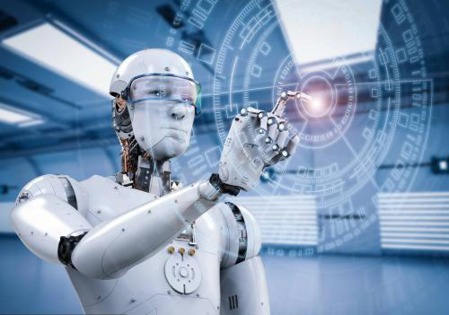
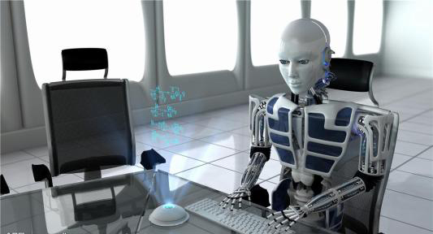
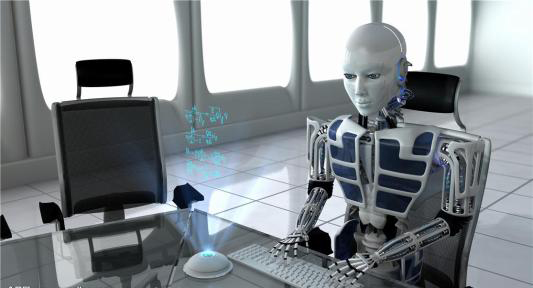

人工智能技术进入大规模商用阶段，人工智能产品全面进入消费级市场。
基于深度学习的人工智能的认知能力将达到人类专家顾问级别。
人工智能实用主义倾向显著，未来将成为一种可购买的智慧服务。
人工智能技术将严重冲击劳动密集型产业，改变全球经济生态。
人工智能将成为更多国家的战略选择
和他们一起拥抱未来！！！！！！
人工智能未来发展
- 大规模商用
- 和人一样聪明
- 冲击传统岗位
中国通信巨头华为已经发布了自主研发的人工智能芯片并将其应用在旗下智能手机产品中，苹果公司推出的iPhone X也采用了人工智能技术实现面部识别等功能。三星最新发布的语音助手Bixby则从软件层面对长期以来停留于“你问我答”模式的语音助手做出升级。人工智能借由智能手机已经与人们的生活越来越近。
在人形机器人市场，日本的软银公司研发的人形情感机器人Pepper从2015年6月份开始每月面向普通消费者发售1000台，每次都被抢购一空。人工智能机器人背后隐藏着的巨大商业机会同样让国内创业者陷入狂热，粗略统计目前国内人工智能机器人团队超过100家。图灵机器人CEO俞志晨相信未来几年：“人们将会像挑选智能手机一样挑选机器人。”

在我看来，售价并非人工智能机器人难以打开消费市场的关键，因为随着产业和技术走向成熟，成本降低是必然趋势，同时市场竞争因素也将进一步拉低人工智能机器人产品的售价。吸引更多开发者，丰富产品功能和使用场景才是打开市场的关键。另外一个好的信号是，人工智能机器人正在引起商业巨头们的兴趣。
零售巨头沃尔玛去年开始与机器人公司Five Elements合作，将购物车升级为具备导购和自动跟随功能的机器人。中国的零售企业苏宁也与一家机器人公司合作，将智能机器人引入门店用于接待和导购。餐饮巨头肯德基也曾与百度合作，在餐厅引入机器人度秘来实现智能点餐。上月19日，情感机器人Pepper也开始出现在软银的各大门店，软银移动业务负责人认为商业领域智能机器人很快将进入快速发展期。
在商业服务领域的全面应用，正为人工智能的大规模商用打开一条新的出路。或许人工智能机器人占领商场等公共场所会比占领我们的客厅要来得更早一些。
在人形机器人市场，日本的软银公司研发的人形情感机器人Pepper从2015年6月份开始每月面向普通消费者发售1000台，每次都被抢购一空。人工智能机器人背后隐藏着的巨大商业机会同样让国内创业者陷入狂热，粗略统计目前国内人工智能机器人团队超过100家。图灵机器人CEO俞志晨相信未来几年：“人们将会像挑选智能手机一样挑选机器人。”

在我看来，售价并非人工智能机器人难以打开消费市场的关键，因为随着产业和技术走向成熟，成本降低是必然趋势，同时市场竞争因素也将进一步拉低人工智能机器人产品的售价。吸引更多开发者，丰富产品功能和使用场景才是打开市场的关键。另外一个好的信号是，人工智能机器人正在引起商业巨头们的兴趣。
零售巨头沃尔玛去年开始与机器人公司Five Elements合作，将购物车升级为具备导购和自动跟随功能的机器人。中国的零售企业苏宁也与一家机器人公司合作，将智能机器人引入门店用于接待和导购。餐饮巨头肯德基也曾与百度合作，在餐厅引入机器人度秘来实现智能点餐。上月19日，情感机器人Pepper也开始出现在软银的各大门店，软银移动业务负责人认为商业领域智能机器人很快将进入快速发展期。
在商业服务领域的全面应用，正为人工智能的大规模商用打开一条新的出路。或许人工智能机器人占领商场等公共场所会比占领我们的客厅要来得更早一些。
过去几年人工智能技术之所以能够获得快速发展，主要源于三个元素的融合：性能更强的神经元网络、价格低廉的芯片以及大数据。其中神经元网络是对人类大脑的模拟，是机器深度学习的基础，对某一领域的深度学习将使得人工智能逼近人类专家顾问的水平，并在未来进一步取代人类专家顾问。当然，这个学习过程也伴随着大数据的获取和积累。
事实上在金融投资领域，人工智能已经有取代人类专家顾问的迹象。在美国，从事智能投顾的不仅仅是betterment、wealth front这样的科技公司，老牌金融机构也察觉到了人工智能对行业带来的改变。高盛和贝莱德分别收购了Honest Dollar与Future Advisor，苏格兰皇家银行也曾宣布用智能投顾取代500名传统理财师的工作。

国内一家创业团队目前正在将人工智能技术与保险业相结合，在保险产品数据库基础上进行分析和计算搭建知识图谱，并收集保险语料，为人工智能问答系统做数据储备，最终连接用户和保险产品。这对目前仍然以销售渠道为驱动的中国保险市场而言显然是个颠覆性的消息，它很可能意味着销售人员的大规模失业。
关于人工智能的学习能力，凯文·凯利曾形象地总结说：“使用人工智能的人越多，它就越聪明。人工智能越聪明，使用它的人就越多。”就像人类专家顾问的水平很大程度上取决于服务客户的经验一样，人工智能的经验就是数据以及处理数据的经历。随着使用人工智能专家顾问的人越来越多，未来2-5年人工智能有望达到人类专家顾问的水平。
国内一家创业团队目前正在将人工智能技术与保险业相结合，在保险产品数据库基础上进行分析和计算搭建知识图谱，并收集保险语料，为人工智能问答系统做数据储备，最终连接用户和保险产品。这对目前仍然以销售渠道为驱动的中国保险市场而言显然是个颠覆性的消息，它很可能意味着销售人员的大规模失业。
关于人工智能的学习能力，凯文·凯利曾形象地总结说：“使用人工智能的人越多，它就越聪明。人工智能越聪明，使用它的人就越多。”就像人类专家顾问的水平很大程度上取决于服务客户的经验一样，人工智能的经验就是数据以及处理数据的经历。随着使用人工智能专家顾问的人越来越多，未来2-5年人工智能有望达到人类专家顾问的水平。
许多科技界的大佬一方面受益于人工智能技术，一方面又对人工智能技术发展过程中存在的威胁充满担忧。包括比尔·盖茨、埃隆·马斯克斯、蒂芬·霍金等人都曾对人工智能发展做出警告。尽管从目前来看对人工智能取代甚至毁灭人类的担忧还为时尚早，但毫无疑问人工智能正在抢走各行各业劳动者的饭碗。
人工智能可能引发的大规模失业是当下最为紧迫的一个问题。阿里巴巴董事会主席马云在今年一场大数据峰会上说：“如果我们继续以前的教学方法，我可以保证，三十年后我们的孩子们将找不到工作。”阿里巴巴在电商领域的对手，京东集团董事局主席刘强东则信誓旦旦地表示：“五年后，给你送货的都将是机器人。”
事实上，机器人抢走人类劳动者饭碗的事情已经在全球上演。硅谷一家新兴的机器人保安公司Knightscope目前已和16个国家签约使用其公司生产的K5监控机器人，其中包括中国。K5将主要用于商场、停车场等公共场所，可以自动巡逻并能够识别人脸和车牌，K5每小时的租金约为7美金。这意味着原本属于人类保安的酬劳现在要被机器人抢走。 
未来2-5年人工智能导致的大规模失业将率先从劳动密集型产业开始。如制造业，在主要依赖劳动力的阶段，其商业模式本质上是赚取劳动力的剩余价值。而当技术成本低于雇佣劳动力的成本时，显然劳动力会被无情淘汰，制造企业的商业模式也将随之发生改变。再比如物流行业，目前大多数企业都实现了无人仓库管理和机器人自动分拣货物，接下来无人配送车、无人机也很有可能取代一部分物流配送人员的工作。
就中国目前的情况来看，正处于从劳动密集型产业向技术密集型产业过渡的过程中，难以避免地要受到人工智能技术的冲击，而经济相对落后的东南亚国家和地区因为廉价的劳动力优势仍在，受人工智能技术冲击较小。世界经济论坛2016年的调研数据预测到2020年，机器人与人工智能的崛起，将导致全球15个主要的工业化国家510万个就业岗位的流失，多以低成本、劳动密集型的岗位为主。 这绝非危言耸听。人工智能终将改变世界，而由其导致的大规模失业和全球经济结构的调整，显然也属于“改变”的一部分，你我都将亲眼看到这一切的发生。
人工智能可能引发的大规模失业是当下最为紧迫的一个问题。阿里巴巴董事会主席马云在今年一场大数据峰会上说：“如果我们继续以前的教学方法，我可以保证，三十年后我们的孩子们将找不到工作。”阿里巴巴在电商领域的对手，京东集团董事局主席刘强东则信誓旦旦地表示：“五年后，给你送货的都将是机器人。”
事实上，机器人抢走人类劳动者饭碗的事情已经在全球上演。硅谷一家新兴的机器人保安公司Knightscope目前已和16个国家签约使用其公司生产的K5监控机器人，其中包括中国。K5将主要用于商场、停车场等公共场所，可以自动巡逻并能够识别人脸和车牌，K5每小时的租金约为7美金。这意味着原本属于人类保安的酬劳现在要被机器人抢走。 
未来2-5年人工智能导致的大规模失业将率先从劳动密集型产业开始。如制造业，在主要依赖劳动力的阶段，其商业模式本质上是赚取劳动力的剩余价值。而当技术成本低于雇佣劳动力的成本时，显然劳动力会被无情淘汰，制造企业的商业模式也将随之发生改变。再比如物流行业，目前大多数企业都实现了无人仓库管理和机器人自动分拣货物，接下来无人配送车、无人机也很有可能取代一部分物流配送人员的工作。
就中国目前的情况来看，正处于从劳动密集型产业向技术密集型产业过渡的过程中，难以避免地要受到人工智能技术的冲击，而经济相对落后的东南亚国家和地区因为廉价的劳动力优势仍在，受人工智能技术冲击较小。世界经济论坛2016年的调研数据预测到2020年，机器人与人工智能的崛起，将导致全球15个主要的工业化国家510万个就业岗位的流失，多以低成本、劳动密集型的岗位为主。 这绝非危言耸听。人工智能终将改变世界，而由其导致的大规模失业和全球经济结构的调整，显然也属于“改变”的一部分，你我都将亲眼看到这一切的发生。
联系我们
————————————————————
HTML_5逐梦之音GROUP
927639852@qq.com
zxh927639852@gmail.com
☎TEL: 15295783098
㉿银河帝国地球行省中国区南京分区江宁街道办事处备案